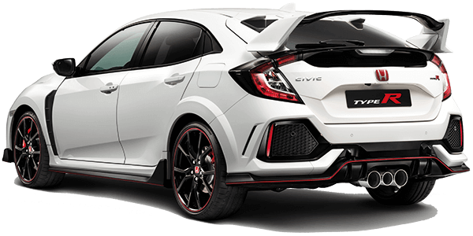

Honda Civic type R
Chassis. O melhor de sempre?
Os amantes de automóveis são tendencialmente revivalistas por natureza, um sentimento que por vezes se sobrepõe à razão. “Ah e tal, antigamente é que era bom…”, sim antigamente era bom mas hoje é capaz de ser melhor. A cada geração, o Honda Civic Type R apresenta-se cada vez melhor – talvez o «mal amado» Type R da geração FN2 tenha sido a excepção à regra.
Regressando ao presente. O novo Civic Type R foi projetado no âmbito do programa de desenvolvimento da décima geração da família Civic – o maior projeto global para um único modelo na história da Honda. O que é que isto significa? Significa que novo Civic Type R é projetado de raíz em paralelo com a nova geração do Civic hatchback, para que independentemente da versão, não haja concessões na performance ou no conforto. E ao contrário do que aconteceu no passado, vai haver um (e apenas um!) Civic Type R para o mundo todo.
Vamos aos fatos:
- A nova plataforma unificada é mais leve e mais resistente do que a do Type R anterior – uma melhoria da rigidez à torção de 37% e uma melhoria da rigidez da flexão estática de 45%;
- As novas suspensões dianteiras MacPherson (braços inferiores e as juntas articuladas das escoras são agora fabricados em alumínio) de duplo eixo reduzem o efeito do binário da direção e melhoram o comportamento nas curvas “no limite”. Adeus «torque steer»;
- O novo Civic Type R é 165 mm mais longo, 36 mm mais baixo e 2 mm mais largo do que o modelo da geração anterior;
- A suspensão traseira multilink melhorou a estabilidade em curvas rápidas e a agilidade em troços mais técnicos. Como? Melhorando a geometria da suspensão face às transferências de massas, consegue-se maximizar a superfície de contacto do pneu com o asfalto;
- Há um programa de amortecimento adaptativo que altera a resposta da suspensão em função da nossa condução. O sistema EPS de rácio variável, calibrado individualmente em cada um dos três modos de condução selecionáveis: “Comfort”, “Sport” e “+R”.
- A direção elétrica de pinhão duplo e rácio variável é uma novidade no Type R, um sistema semelhante ao que integra o novo Civic, mas otimizando o rácio variável para oferecer uma sensibilidade mais direta e segura;
- Os freios dianteiros são fornecidos pela Brembo.

A velocidade nas curvas é mais elevada porque o automóvel possui uma via e pneus mais largos, uma maior distância entre eixos, uma nova suspensão traseira multilink e uma aerodinâmica otimizada que melhora a estabilidade.
Veja mais informações em: aqui
Entre em contato --// --
Autor: Martim Dietterle